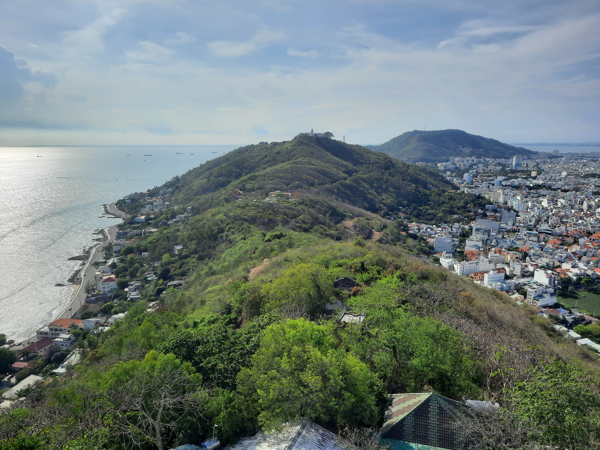

Go Back
Vung Tau

Vung Tau is a coastal city in Vietnam about 2 hours away from Ho Chi Minh City. There are several ways to get here including the fast boat down the river (I recommend this option). It makes for a nice conveniently located escape from the hectic city and it's a city I look forward to visiting again. As with most places in Vietnam it has it's own unique food and activities. Here is my guide to visiting Vung Tau.
Rio de Janeiro isn't the only city in the world with a large Jesus Christ statue. Some people may be quite surprised to hear that one exists in Vung Tau. The statue is the largest Christian statue across Asia since 2012, and since its restoration of 1993, it has been a major pilgrim destination for Christians across Vietnam as well as Christian vacationers. There is also a Virgin Mary statue located in a different location which is near the Jesus statue. The Jesus statue has a lot of steps leading up to it so prepare for a bit of a trek. Once you arrive though you are rewarded with the possibility to actually climb up the statue and stand inside of the arms while taking in the spectacular view of the city and Ocean around. The Mary statue is more accessible as it has far less steps. It's also a nice statue to see although you can't climb inside of this one. I would put these on your bucket list for things to do in Vung Tau.
Vung Tau provides some of the nearest beaches to Ho Chi Minh City and is a popular destination for people living in the city. There are a few beaches in the area but my favourite one was probably Front Beach. This is the best place to watch the beautiful sunset behind all the boats. The South of Vietnam has a tropical climate so it's basically a year round beach destination. If you go outside of the actual city you can find more secluded beaches.
As with most places in Vietnam you should visit any form of night market you can find. The one that I went to seemed to be a pop up market and I'm not so certain if it's there year round. However, after researching a bit it does seem there is a permanent night market in the city. You can find a large variety of food here and the markets in Vietnam are always bustling with life and energy. This would be a great place to come have dinner, a beer and to people watch.
There are two unique foods that come to mind from my trip to Vung Tau and I believe that they originated there. The first is called banh khot. Banh khot is typically made with shrimp or squid on top of a crunchy rice flour or tapioca flour cake. It's usually eaten with chilis, veggies and of course fish sauce. There are many banh khot restaurants in Vung Tau but one that we enjoyed so much that we went back to the day after was called Banh Khot 75. The other interesting dish that I've only seen in Vung Tau and not anywhere else in Vietnam is Lau Ca Duoi. Ca Duoi is basically like a sting ray. Lau means hotpot in Vietnamese (I know I didn't include the accents or tones). Pictured below is the ray hotpot. It was pretty good and is worth trying if you're in Vung Tau. There are several restaurants there that sell this specialty and they're usually packed with friends and families sharing hotpots.
I had a great experience staying at the Corvin Hotel in Vung Tau. It has a beautiful rooftop pool and bar which overlooks the beach. The location is great and it's a good place to base yourself from. The price was very reasonable for what you get. The room we stayed in was pretty standard for a hotel room. It was clean, had a comfortable bed and had great views of the sea and city. I came with my girlfriend and four other friends. The hotel provided a great atmosphere to relax and enjoy the laid back pace of Vung Tau. We were content swimming in the pool and lounging on the rooftop.